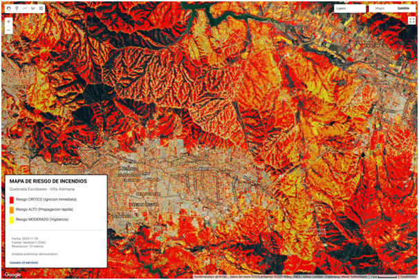

Cliente Objetivo: Municipalidad de Villa Alemana
COGRID - Dirección de Emergencias
Propuesta Compra Ágil - Temporada 2025-2026
Problemática Identificada
La Municipalidad de Villa Alemana enfrenta un desafío crítico en la gestión de riesgo de incendios forestales en el sector de Quebrada Escobares, zona de interfaz urbano-forestal altamente vulnerable durante la temporada de incendios (octubre-abril).
COGRID necesita priorizar recursos limitados en un área extensa (~3,750 hectáreas), identificar zonas críticas para fiscalización de empresas (Sonacol, Energas, Electrogas), y tomar decisiones operativas basadas en datos objetivos, no solo percepción en terreno.
Solución Técnica Propuesta

Figura 1: Análisis preliminar de riesgo de incendios mediante Sentinel-2. Colores cálidos (rojo/naranja) indican zonas de mayor riesgo potencial que requieren priorización.
La propuesta consiste en un sistema de monitoreo satelital quincenal que permitirá a COGRID identificar y cuantificar zonas de riesgo con precisión espacial de 10 metros, generando cartografía operativa actualizada cada 15 días durante toda la temporada de incendios (octubre 2025 - abril 2026).
Análisis Satelital
Procesamiento quincenal de imágenes Sentinel-2 con índices espectrales NDVI, NDMI y NBR para detección de vegetación seca y combustible.
Cartografía Operativa
Mapas georreferenciados en formatos SHP (SIG) y KML (Google Earth) con clasificación de riesgo en 3 niveles: Crítico, Alto y Moderado.
Informes Ejecutivos
Reportes quincenales con métricas de evolución, comparación temporal, y recomendaciones operativas priorizadas para COGRID.
Validación Terreno
Verificación in-situ de puntos críticos identificados, calibración de umbrales según condiciones locales, y ajuste del modelo.
Metodología Técnica
Stack Tecnológico
- Google Earth Engine: Procesamiento masivo de imágenes satelitales
- Sentinel-2 (ESA/Copernicus): Imágenes multiespectrales 10m cada 5 días
- Índices espectrales: NDVI (vegetación), NDMI (humedad), NBR (severidad)
- QGIS/Python: Generación de cartografía y análisis espacial
- Validación terreno: GPS de alta precisión y fotografía georreferenciada
El análisis se basa en metodologías validadas por NASA/USGS para detección de riesgo de incendios, adaptadas a las condiciones específicas de la vegetación mediterránea de Chile Central.
Beneficios Esperados
Priorización Eficiente
Hasta 70% de ahorro en tiempo de inspección al focalizar recursos solo en zonas identificadas como riesgo crítico/alto por satélite.
Fiscalización Respaldada
Coordenadas GPS específicas de zonas críticas para exigir limpieza de fajas a Sonacol, Energas y Electrogas con evidencia técnica satelital.
Decisiones Basadas en Datos
Actualización quincenal objetiva de condiciones de riesgo, eliminando dependencia exclusiva de percepciones puntuales en terreno.
Detección Temprana
Alertas de zonas que aumenten su nivel de riesgo entre análisis sucesivos, permitiendo intervención preventiva antes de condiciones críticas.
Optimización de recursos municipales limitados, prevención de siniestros (costo promedio >$500M CLP por evento), y respaldo técnico satelital para fiscalización de empresas con obligaciones de mantención de fajas.
Modelo Replicable para Otros Municipios
Este proyecto establece un modelo estándar replicable para municipalidades de Chile que enfrentan riesgo de incendios forestales en zonas de interfaz urbano-forestal.
Aplicabilidad:
- Municipios con zonas de riesgo de incendios (Valparaíso, Metropolitana, O'Higgins, Maule, Biobío)
- Gobiernos Regionales (GORE) para planificación territorial regional
- CONAF/SENAPRED para coordinación de emergencias
- Empresas con obligaciones de mantención de fajas (utilities, inmobiliarias)
Escalabilidad:
- Plan Básico: Análisis quincenal manual para comuna individual
- Plan Avanzado: Dashboard automatizado + alertas en tiempo real + API integración
- Plan Regional: Cobertura múltiples comunas con coordinación centralizada GORE
¿Tu municipio enfrenta riesgo de incendios forestales?
Este modelo es replicable para cualquier comuna con zonas de interfaz urbano-forestal.
Conversemos sobre cómo adaptarlo a las necesidades específicas de tu territorio.
Informe Técnico Completo
Descarga el informe de análisis de riesgo de incendios con metodología detallada, mapas de clasificación y recomendaciones operativas.
Descargar Informe PDF (453 KB)